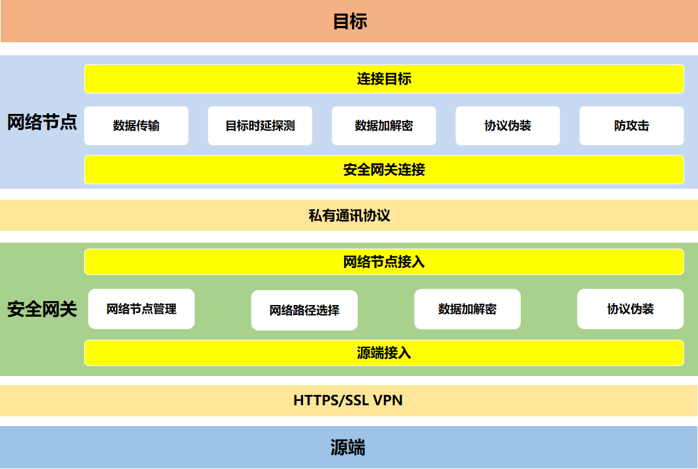

全球部署的去中心化的自适应加密全球基础网络，采用自主研发的数据编码技术和传输协议，对数据进行随便化、分散化处理，将流量隐藏到正常流量中，突破安全监测。融合VPN、CDN、DNS、Tor、卫星、激光、量子等多种技术，构建开放式异构多隧道的覆盖全球的隐私通信网络，全球范围任意地点即插即用。
实时监控全球节点和通道情况，根据业务实际需求，对传输通道进行自动化和智能化管控，确保平台服务的安全性、可靠性和可用性。采用去中心化技术，全球节点地位相等完全自治，对数据进行伪随机跳变传输，随机选择下一跳路由节点，并采用混淆算法对数据进行加密。融合多种技术，构建开放式异构多隧道的覆盖全球的隐私通信网络，实现加密数据隐蔽回传、反监听、反溯源的能力。
系统可展示当前安全网关设备所使用的节点信息、节点链路信息；节点信息包括节点ip、端口、区域、账号、连接状态。链路信息包括链路上所有的节点及节点的ip、端口和区域，以及链路时延
在检测到有系统某个节点意外断开时，安全网关会尝试重新拨号连接或者重新选择到达目标的最短路径，直到连接成功。防止在失去反溯源网络保护时暴露本地IP或上一层节点的IP地址。
安全网关通过反溯源网络访问目标，因此目标无法追踪到安全网关，更追踪不到源端；对目标来说，其见到的是网络节点的IP，而不是安全网关的IP，这样可保护源端不被攻击，且很难追踪。
由于Internet是一个基于TCP/IP的开放系统，几乎所有的数据都是以明文方式在网络间传递，因此数据传输的安全性较差，容易被第三方拦截和读取。目前解决这个问题的主要方法大致分为两类：安全协议法和代理服务器法。安全协议法实施过程比较简单，但其安全性受到协议本身的限制, 如加密算法和密钥强度的选择等，使得该方法不够灵活；而代理服务器法在这些方面具有优势，反溯源网络使用基于RSA和DES相结合的安全代理方案，用以保障源端和目标之间的数据安全传输；同时为了逃避各种审查设备，反溯源网络在此安全方案的基础上，对所有的报文，都进行协议伪装。